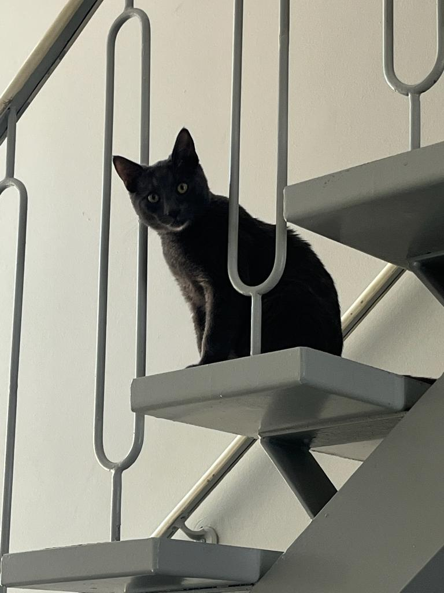
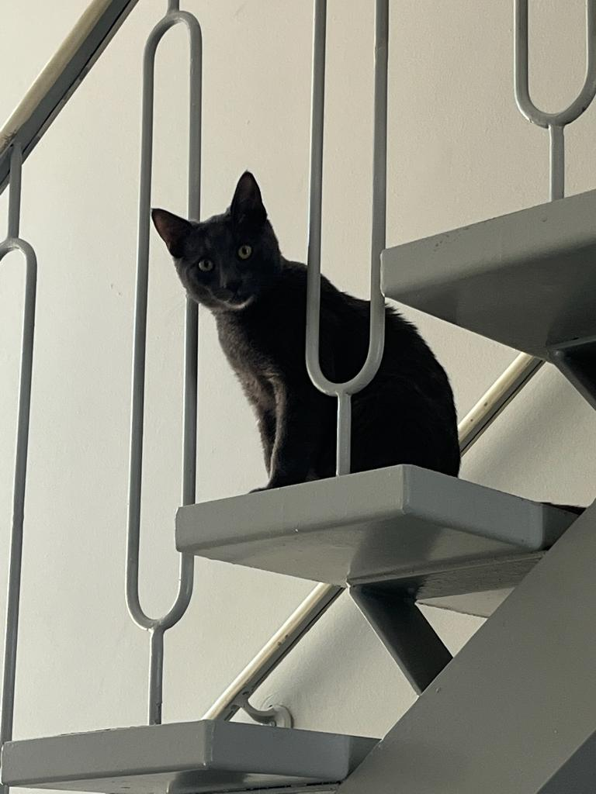

Bacon Q Dog

Bacon Q. Dog is a 9yr old labradoodle. He prefers to spend his days lounging among the three different beds/couches that his family has gifted him. He enjoys a walk or two around the neighborhood, as long as he can pretend that he doesn't see any of the other animals to avoid the embarrassment of not wanting to admit he has no wolf-like skills in chasing them.
At night just as the rest of the family is ready to relax, Bacon suddenly wants to release all of his energy. He will place his toys on a mini couch and frantically drag the couch around, giving his toys "a ride." There is also a lot of rolling. Lots and lots of rolling.
Photo Gallery


Likes
- Belly rubs
- Playing tug-of-war
- Sneaking onto the couch
Ash the Hallway Cat

Photo Gallery
 

Likes
- Stairs
- Exploring
- Sneaking into my apartment